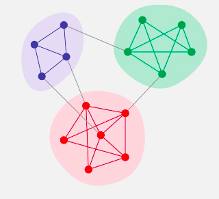

对于社交网络, 主要的研究与应用包括以下三个方面:
- 信息推测.
- 组群发现.
- 消息传播.
这里着重介绍一些组群发现的理论, 以及使用真实的数据进行试验.
组群分类
显式组群 & 隐式组群
在一般的社交网络中, 组群有显式与隐式之分.
比如在豆瓣网上的各种小组就属于显式群组.
而隐式群组, 是通过观察和分析节点之间的交互特征发现的群组. 比如通过一些人平时的通话记录, 来推断哪些人是朋友, 一起工作等.
这里所说的组群发现, 一般默认指的是隐式组群发现.
可重叠组群 & 不可重叠组群
网络中的节点可以同时属于多个组群, 这样的组群称为可重叠组群.

网络中的每个节点只属于一个组群, 组群之间没有共同节点, 则称为不可重叠组群.
组群发现的意义
单个节点.
通过组群发现, 将节点划分到了不同的团体, 可以通过整个团体的信息, 来对单个节点进行推测, 更好地理解单个节点.
群体.
有时候, 一些事实很难甚至无法通过单个节点看出来, 但是却能够从整体的行为中挖掘得到. 对于划分得到的组群, 它们之间的区别与联系可以通过划分结果进行分析.
组群发现算法
核心思想.
- 高内聚: 组群内部节点之间交互密集.
- 低耦合: 组群之间的交互稀疏.
组群发现 vs 聚类.
- 聚类: 各数据点之间没有交互(连边), 根据节点的属性(如人的性别, 年龄, 学历等)来进行划分.
- 组群发现: 节点之间有交互(连边), 根据其交互行为来进行划分.
经典算法Louvain.
模块度(Modularity).
用以衡量组分划分的好坏的一个非常重要的指标, 越大说明划分效果越好. 计算公式为:
对于无向图, 一般看做有向图处理, 即一条无向连边, 等价于两条有向连边.
一般Q值在0.3~0.7.
| C1 | C2 | C3 | |
|---|---|---|---|
| C1 | 6 | 0 | 1 |
| C2 | 0 | 6 | 1 |
| C3 | 1 | 1 | 8 |
算法流程.
- 将每个节点作为一个组群.
- 尝试将某个节点向邻近节点的组群合并, 计算合并后的模块度增量, 选择增加最大的组群进行移动. 若增量为负数, 则不移动. 遍历所有节点, 并循环处理, 当稳定时停止本次划分.
- 将现阶段组群看做一个节点, 组群内的边作为”新节点”的自环边, 同时边的权重为之前边的权重和. 再进行第二步.
从算法可以看出, Louvain算法是一种层次型的组群发现, 可以得到一系列不同层次的组群以及对应的Q值. 最终可以选择最大的Q值划分, 最为最优划分.
代码实践
对于Louvain算法, 在Github上有开源的包python-louvain, 利用这个包来对网络进行组群划分.
1 | import networkx as nx |
1 | edge_list_df = pd.read_csv('network_links.csv') |
1 | # 使用best_partition将会得到最佳组群划分的一个字典, 其中key为节点, value为组群编号. |
1 | # 得到不同节点的组群编号列表. |